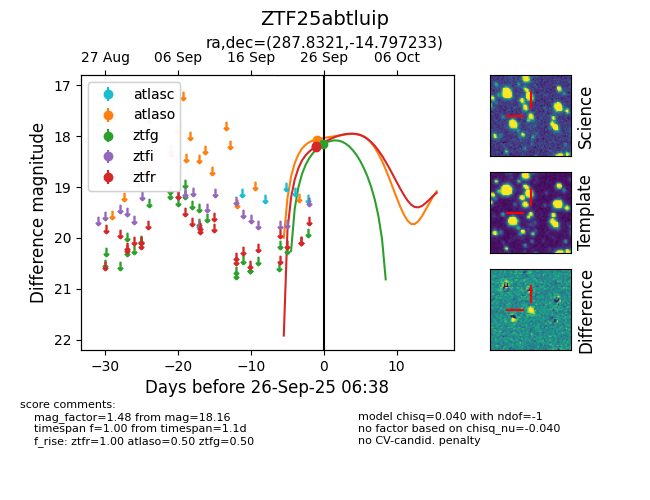
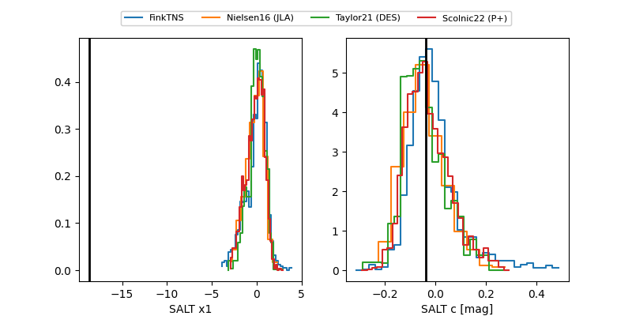

FINK: ZTF25abtluip
Lasair: ZTF25abtluip
ALeRCE: ZTF25abtluip
ZTF25abtluip (ztf,fink)
equatorial (ra, dec) = (287.8321,-14.79723)
galactic (l, b) = (21.8252,-11.01367)


last atlaso=18.07, ztfg=18.16, ztfr=18.20
1 atlaso, 1 ztfg, 2 ztfr detections